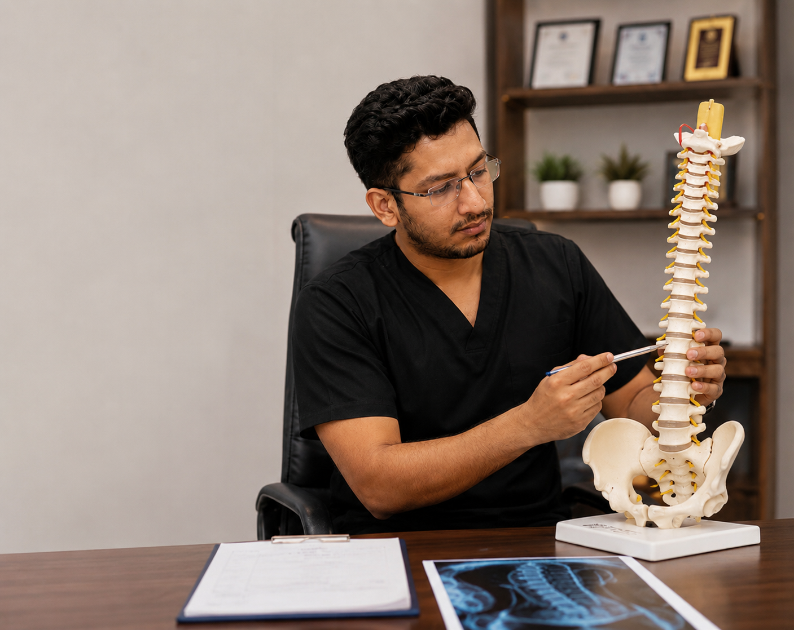

Bone, Joint, Spine & Sports Injury Care
Consult Dr. Samarth Thakkar, MBBS, DNB Orthopaedics for knee pain, back pain, fractures, arthritis, shoulder and hip problems, ligament injuries and other orthopaedic conditions.

Orthopaedic Conditions & Treatments
Explore focused information for common bone, joint, spine and sports-related problems.
Knee Pain Treatment in Surat
Knee pain, arthritis, swelling, stiffness, meniscus and ligament problems
Learn more →Back Pain & Sciatica Treatment in Surat
Lower back pain, radiating leg pain, slipped disc symptoms and spinal stenosis
Learn more →Shoulder Pain Treatment in Surat
Frozen shoulder, rotator cuff problems, impingement and instability
Learn more →Hip Pain Treatment in Surat
Hip arthritis, groin pain, bursitis, AVN and mobility problems
Learn more →Fracture & Trauma Care in Surat
Assessment of fractures and injuries after falls, sports or accidents
Learn more →Sports Injury Specialist in Surat
Ligament, tendon, muscle and joint injuries for active patients
Learn more →ACL & Meniscus Injury Treatment in Surat
Knee instability, locking, clicking and sports-related knee injuries
Learn more →Joint Replacement Evaluation in Surat
Knee and hip arthritis assessment and joint replacement planning
Learn more →Ankle & Foot Pain Treatment in Surat
Ankle sprain, heel pain, Achilles tendon and foot injuries
Learn more →Wrist & Hand Pain Treatment in Surat
Wrist injuries, carpal tunnel, trigger finger and tendon problems
Learn more →Neck Pain & Cervical Spondylosis Treatment in Surat
Neck pain, stiffness, arm pain, tingling and numbness
Learn more →
About Dr. Samarth Thakkar
Dr. Samarth Thakkar provides orthopaedic consultation in Vesu, Surat. Consultation focuses on careful clinical assessment, clear explanation of the diagnosis and an individualized treatment plan.
Orthopaedic FAQs
When should I see an orthopaedic doctor?
Persistent joint or back pain, swelling, reduced movement, pain after injury, difficulty walking, deformity, instability, numbness or weakness may warrant an orthopaedic assessment.
Does every fracture require surgery?
No. Treatment depends on fracture type and position and may include a splint, cast, reduction or surgery.
Does every knee arthritis patient need replacement?
No. Treatment is individualized according to symptoms, function, examination, imaging and response to non-surgical care.
Book an Orthopaedic Consultation in Vesu
Dr. Samarth Thakkar
MBBS, DNB Orthopaedics
201, 2nd Floor, Solaris Kode, Beside Shyam Temple, VIP Road, Vesu, Surat, Gujarat 395007
📞 078385 89031
Before Your Visit
Bring available X-rays, scans, prescriptions and previous medical records. Call or WhatsApp to confirm consultation availability.
Website information is educational and does not replace individual medical assessment.